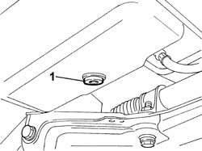
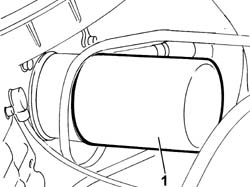

0010T12 ENGINE OIL AND FILTER REPLACE
- Path
- Procedures > 00 MAINTENANCE > 0010 NEW UNITS AND PLANNED MAINTENANCE > 0010T VEHICLE OIL AND FLUIDS > 0010T12 ENGINE OIL AND FILTER REPLACE
- Kind
- repair procedure (removal / refitting; the operation number is the code)
- Applies to
- all engines; all production periods
- Interactive page
- https://sloeber94.github.io/elrnDB-fDct/en/#/244000601
Applies to: all engines; all production periods
- Position the vehicle on the lift.
- Remove the filler cap.
- Release the dipstick.
- Raise the vehicle.
Op. 7055B54 UNDER-ENGINE GUARD - R R
- Position a suitable container under the vehicle by the drain plug.
1. Undo the drain plug in the crankcase sump and leave the oil to drain into the container.

Applies to: all engines; all production periods
1. Undo the oil filter and remove it.

Applies to: all engines; all production periods
- Clean the drain plug and tighten it to the recommended torque.
- Lubricate the new oil filter seal with engine oil and tighten it fully.
- Refill the lubrication circuit with the recommended oil.
Applies to: engines: 2.0 16V; all production periods
 | Description | Qty. | Component | Type | Classification |
|---|---|---|---|---|---|
. | SELENIA 20K | Litri | ENGINE LUBRICATION SYSTEM | Oil | SAE10W40-ACEA A3 96-CCMC G5 AP |
Applies to: engines: 2.0 JTD 8V; all production periods
| Description | Qty. | Component | Type | Classification |
|---|---|---|---|---|---|
. | SELENIA TURBODIESEL | 5.25 Litri | ENGINE LUBRICATION SYSTEM | Oil | SAE10W40-ACEA B3-API CD |
Applies to: engines: 2.3 JTD 16V; all production periods
| Description | Qty. | Component | Type | Classification |
|---|---|---|---|---|---|
. | SELENIA TURBODIESEL | 6.3 Litri | ENGINE LUBRICATION SYSTEM | Oil | SAE10W40-ACEA B3-API CD |
Applies to: engines: 2.8 JTD 8V; all production periods
| Description | Qty. | Component | Type | Classification |
|---|---|---|---|---|---|
. | SELENIA TURBODIESEL | 5.7 Litri | ENGINE LUBRICATION SYSTEM | Oil | SAE10W40-ACEA B3-API CD |
Op. 0010T11 ENGINE OIL CHECK LEVEL AND TOP UP
- Check that the oil level is correct using the dipstick.
- Fit the filler cap.
- Start the engine and let it idle for about two minutes; switch off the engine and wait for a few minutes.
Op. 0010T11 ENGINE OIL CHECK LEVEL AND TOP UP
- Check that the oil level is correct once again.
Op. 7055B54 UNDER-ENGINE GUARD - R R
- Remove the vehicle from the lift.